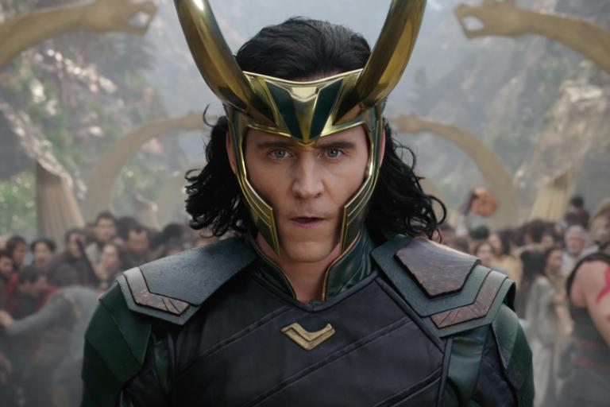
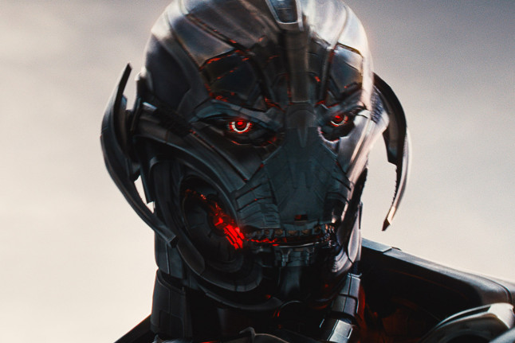
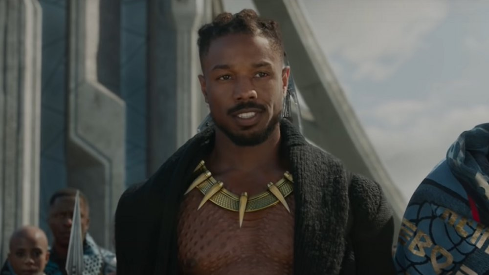
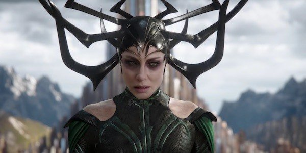
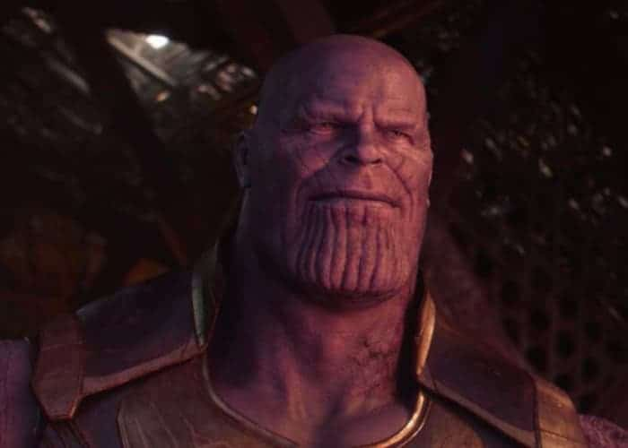

No superhero film is complete without a good villain. The MCU has seen some of the most iconic superhero villains, from robots and aliens, to gods and simple human beings.
Here's a look at the MCU's most iconic villains:
Loki
The Asgardian prince Loki's quest to prove his superiority over his brother Thor led him down a dark path, culminating in an assault on New York with the alien species Chitauri. It was this assault that led to the formation of the original Avengers, who stopped his plan.
Despite his multiple evil schemes, Loki eventually became a reformed hero and a fan favorite. His immense popularity has resulted in him getting his own self-titled Disney+ show, coming in June 2021.
Ultron
Initally designed as a peacekeeping AI program by Tony Stark and Bruce Banner, Ultron became sentient and rebelled against its creators. After linking itself to the internet, Ultron sought to end global violence by eliminating humanity.
Despite holding the country of Sokovia hostage, Ultron was eventually defeated by the team of the Avengers, Maximoff twins and the Vision - an AI synthezoid created by Ultron himself, who saw the error of his maker's ways.
Killmonger
As a child Eric Killmonger (aka N'Jadaka) witnessed his uncle, Wakanda's King T'Chaka, kill his father, the exiled prince N'Jobu, for treason.
He succeeded in his quest to dethrone the next king of Wakanda, T'Challa, after beating him in a ritual combat and seemingly killing him, although eventually T'Challa returned and defeated Killmonger.
Killmonger's uprising, albeit forceful and violent, was with the intention of opening Wakanda to the world and preventing the oppression of people of African descent worldwide, garnering him respect and praise from fans.
Hela
Revealed as the older sister of Thor and Loki, Hela was a fierce warrior who fought alongside her father Odin. However, as she grew increasingly bloodthristy, Odin imprisoned her in Hel (Asgardian hell) for millenia, until his death.
As she derived her power from Asgard itself, Hela was virtually indestructible. Her eventual downfall involved Thor invoking Ragnarok, in which (after Asgardians were evacuated) the demon Surtur obliterated Asgard, seemingly destroying Hela with it.
Thanos
Known as the "Mad Titan", Thanos experienced his home planet of Titan get destroyed due to overpopulation. He thus, sought to "restore" balance in the universe by collecting the Infinity Stones and halving the population of the entire universe.
Although he did succeed in doing so, the Avengers and Guardians of the Galaxy collected the Infinity Stones themselves by travelling through time and managed to defeat him in the epic finale battle in Avengers: Endgame.